HTML kaynak fonksiyonları / gerçek native Simulator karşılaştırması. Piksel içerikleri düzenlenmedi. HTML 390×844 CSS px, 2×; native hedef 402×874 pt, dar ekran 375×812 pt, 3×. Paneller aynı genişlikte gösterilir; pixel-perfect ölçüm değildir. HTML gövde fontu dış fontlar yüklenmediği için fallback olabilir, embedded Archivo korunur. Native Inter kullanır.
Yayın seçimi: 75 orijinal kareden 22 PNG. Diğer 53 kare yerelde korunur. Yeni Simulator koşusu yapılmadı; onaylı görüntülerin pikselleri değişmedi.
HTML “Serin 26 gün” ve “Geçti, bitir” metinleri yalnız referanstır. Native sonuç varsaymaz veya kayıt üretmez. Stepper ve alternatif kartlar bu fazda yok; 5/10/15/20 dk açık seçimdir. Yeni Pause, Urge veya Behavior Slip kaydı yoktur.
QA ve audit · 11.8.2 önerisi · Görsel inceleme notları · Test sonuçları · Boyut/hash envanteri · Seçim gerekçeleri · Yayın kapsamı · Dosya listesi · Dosya ve boyut toplamı · Yayın doğrulaması
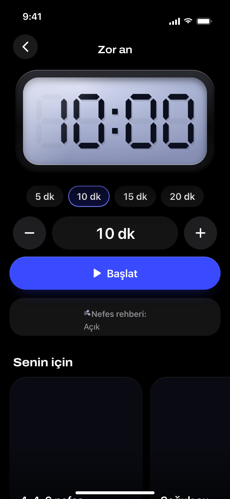
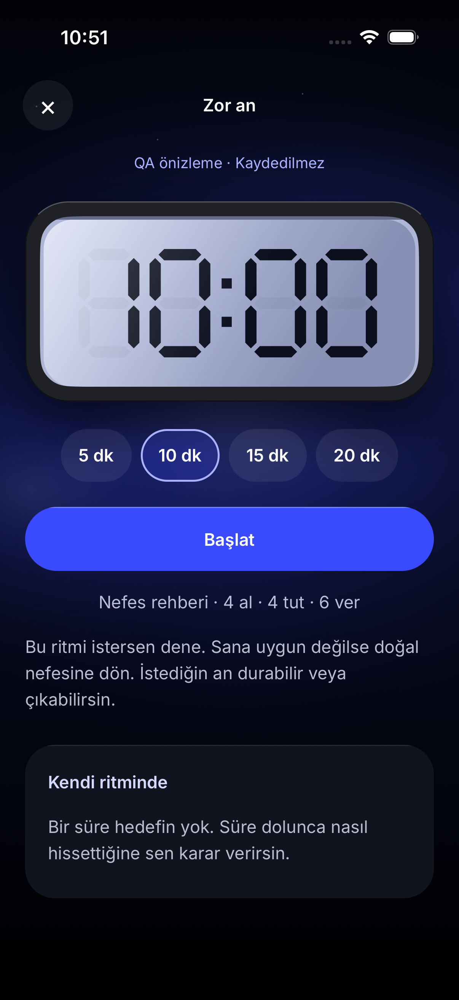
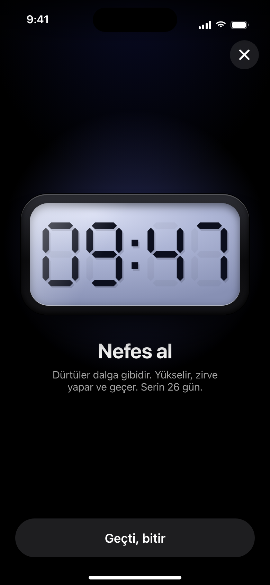
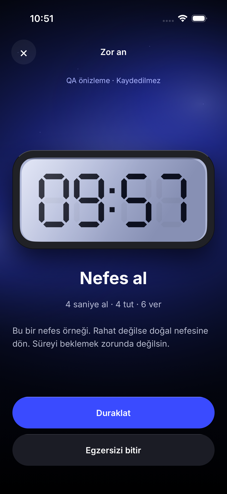
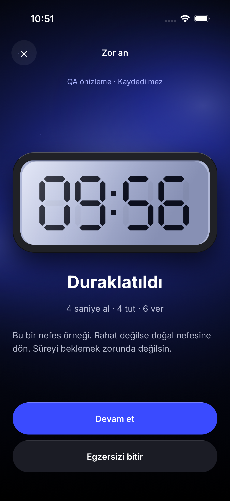
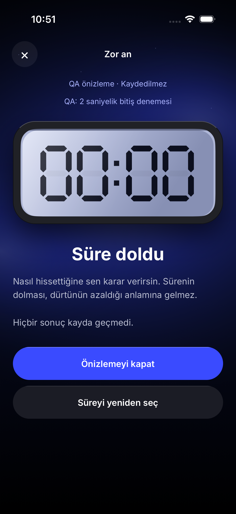
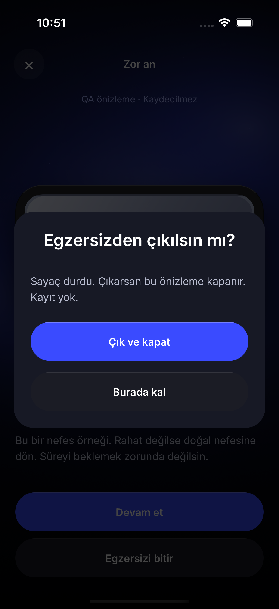
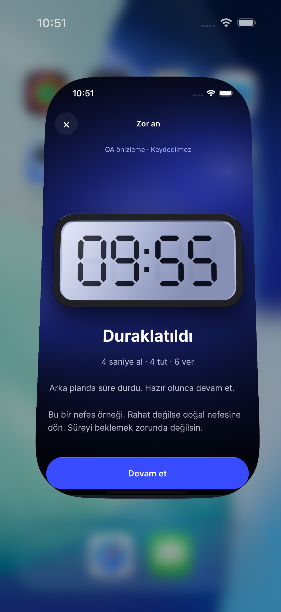
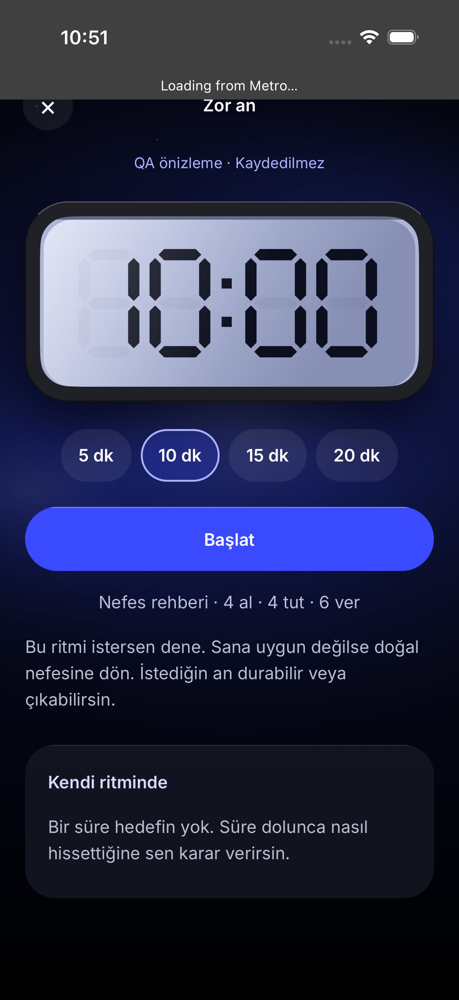
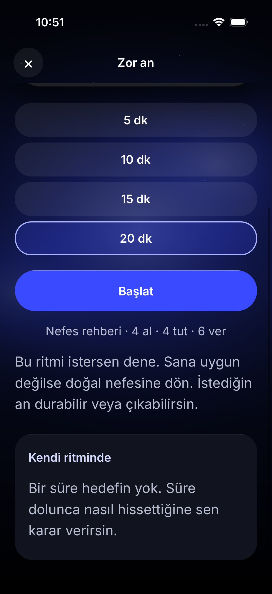
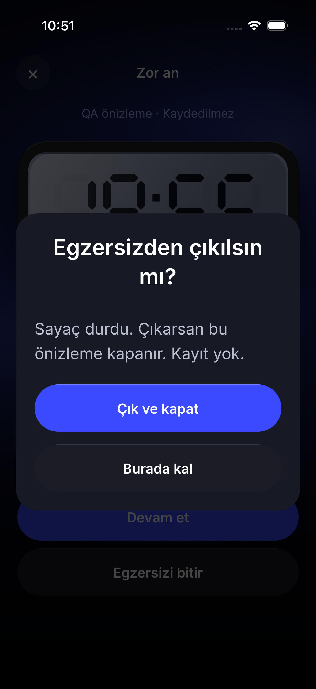
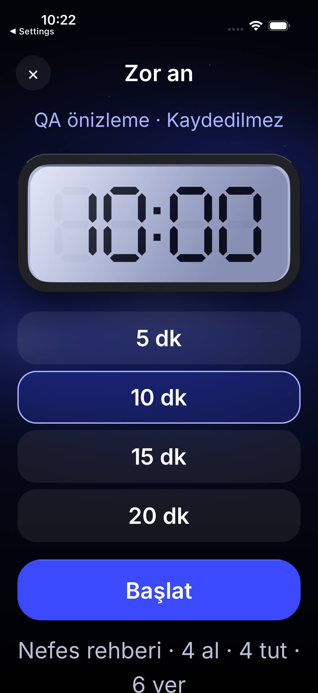
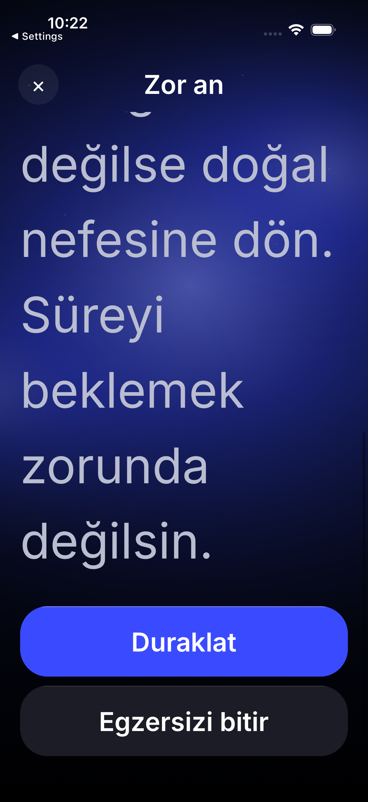
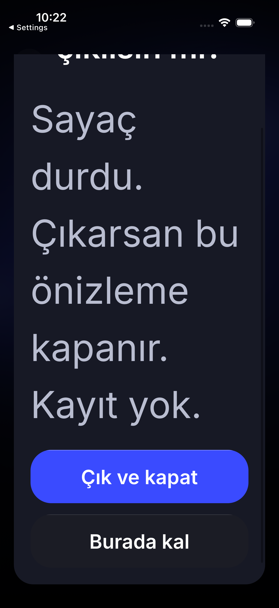
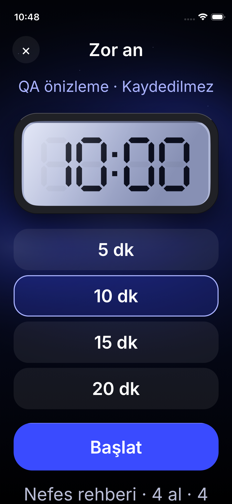
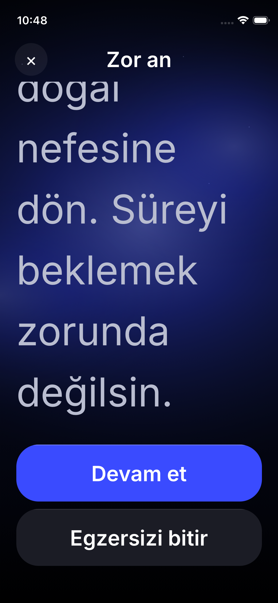
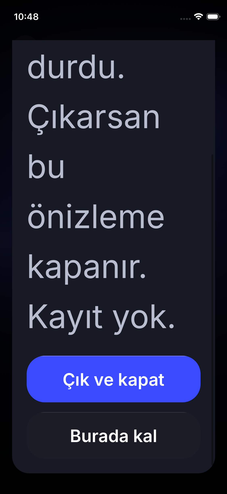
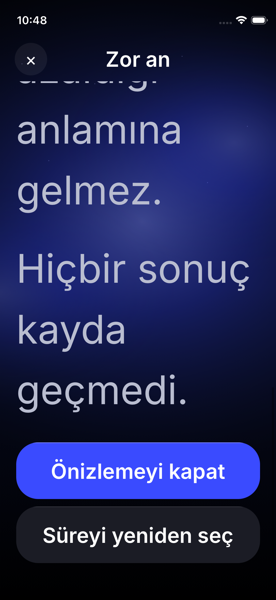
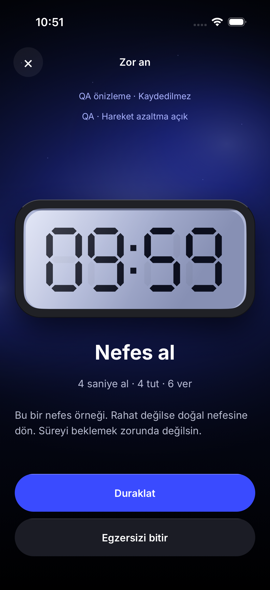
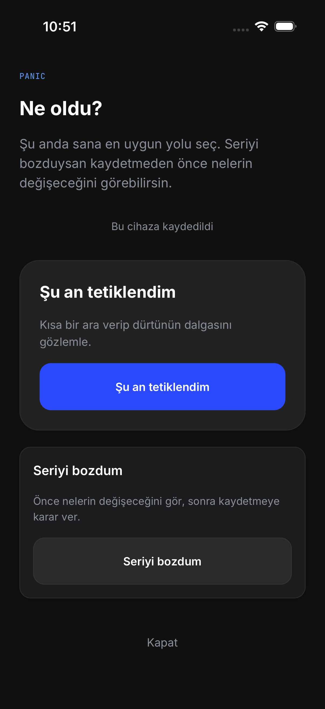
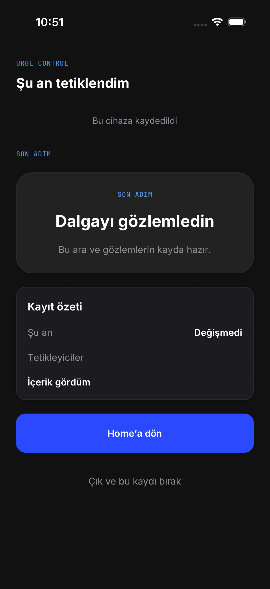
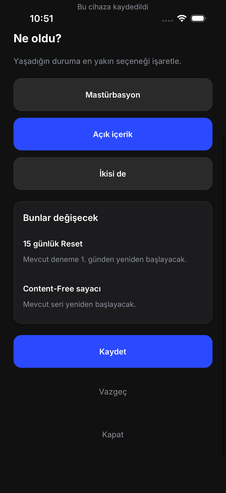